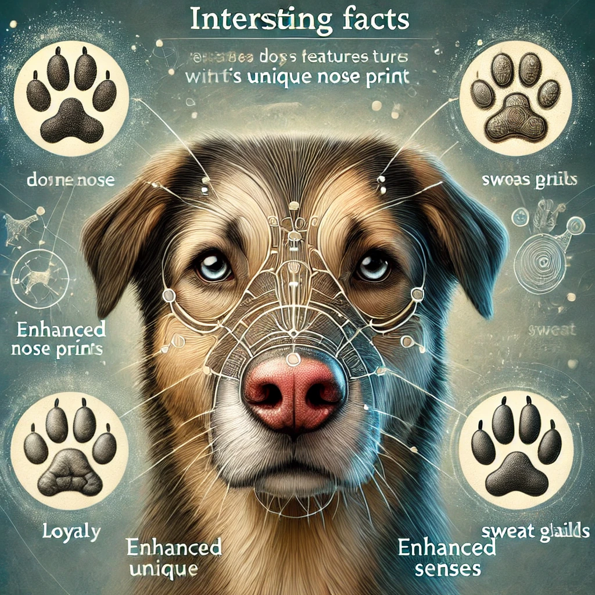

Interesting Facts About Dogs

- Dogs can smell diseases: Dogs have an incredible sense of smell, and they can detect certain illnesses like cancer, diabetes, and seizures in humans.
- They dream like humans: Dogs experience REM (Rapid Eye Movement) sleep, which is when dreaming occurs. You might see them twitching or making noises while dreaming!
- Their nose prints are unique: Just like human fingerprints, every dog has a unique nose print, which can be used to identify them.
- They have a special "love hormone": When a dog looks at its owner, it releases oxytocin, also known as the "love hormone," which is the same hormone humans release when bonding.
- A dog’s sense of smell is at least 40x better than ours: They have up to 300 million olfactory receptors in their noses, compared to about 5 million in humans.
- Dogs can be trained to detect low blood sugar: Some dogs can smell drops in blood sugar levels and alert their owners, helping people with diabetes avoid serious issues.
- They have three eyelids: In addition to the upper and lower lids, dogs have a third eyelid called a nictitating membrane, which helps keep their eyes moist and protected.